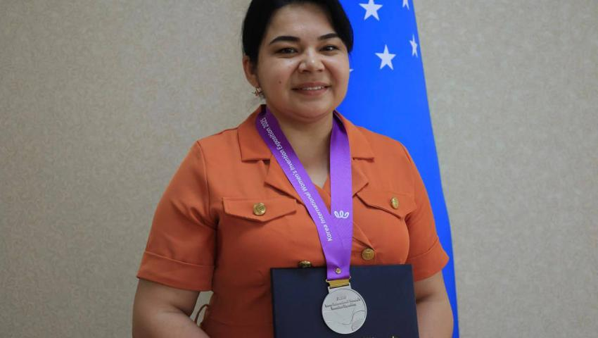

Muhandislik-axborot-texnologiyalari fakulteti dekani
Abdullayeva Ozoda Safibullayevna
Qabul vaqti: Dushanba 16:00 dan 18:00 gacha
Telefon: +998 93 925 46 06, +998 94 155 77 85
Elektron pochta: ozoda.safibullayevna121620@gmail.com
Mehnat faoliyati
2004-2008 yy. - Namangan muhandislik-pedagogika instituti talabasi
2024 y. – 2025 yy. - Namangan muhandislik-qurilish instituti Sanoatni axborotlashtirish fakulteti dekani
2025 y.- h.v -Namangan davlat texnika universiteti, Muhandislik-axborot texnologiyalar fakulteti dekani.
